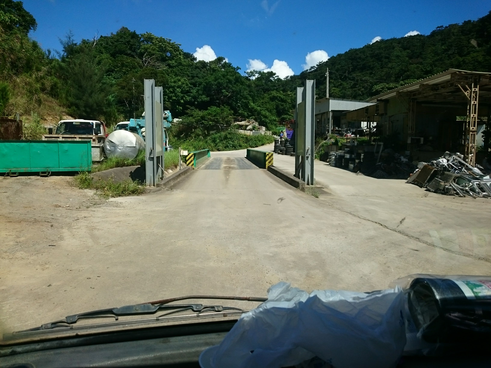
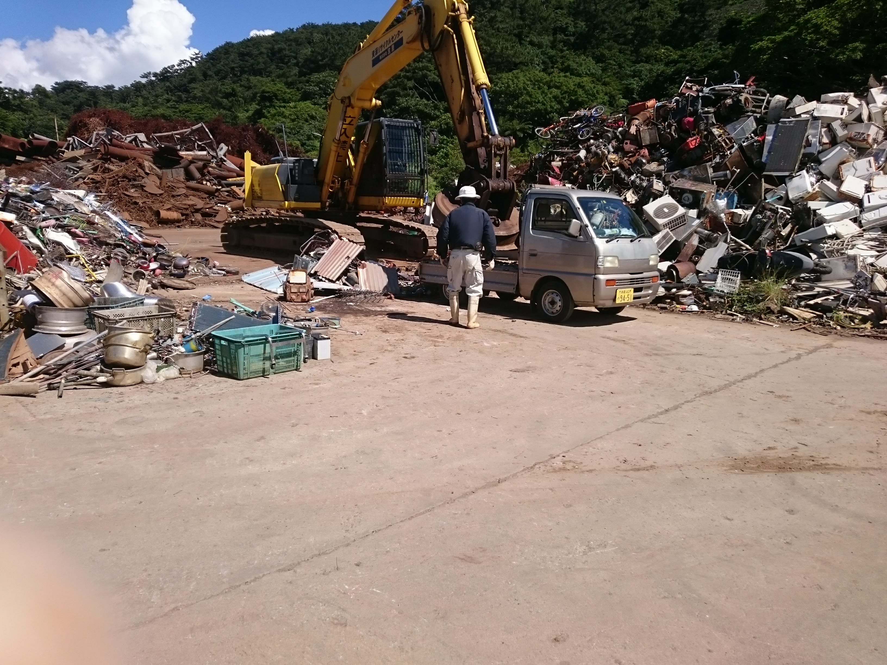

鉄くずを売る流れ
- 鉄くずを100kg以上集める。鉄くずは100kgで1単位としている。
- 軽トラに鉄くずを入れる。なるべく金属だけになるように分解する必要があるが、少しなら鉄以外のものが付着していても良い。
- 鉄くず買取業者の元へ軽トラで移動。
- 大きな計量器に軽トラに鉄くずを積んだまま乗る。

- ブザーがなったら計量OK。軽トラを進める。
- 従業員の誘導に従って軽トラを移動させる。
- 指定の場所に車を止めたら、荷をしばっているロープをはずす。
- 従業員が大型電磁石付きのユンボ―で鉄くずをおろす。

- 鉄くずをすべて下ろしたら大きな計量器に再び乗る。
- ブザーが鳴ったら計量器から車を適当に移動し、窓口へ行く。
- 窓口で住所などを記入後、お金を受け取る。
- ホーム
- プログラミングの覚書
- その他
- 鉄くずの売り方